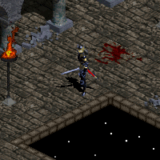

THE ASSASSIN
Also known as the Viz-Jaq'taar or the Order of the Mage Slayers, Assassins are an ancient order originally founded by the Vizjerei Clan to hunt down and eliminate rogue magi within their own ranks. Because the Order remains veiled in secrecy, few people know more than rumors about this mysterious organization. Their reputation has been one shrouded in ambiguity. Legends of their stalwart vigilance, and the widespread fear of their retribution, have kept many mages away from the temptations of corruption, so actual sightings have been rare.
Knowing that such an order might itself be corrupted if exposed to the power of magic, the Vizjerei deemed it of the utmost importance that these Assassins maintain the purest, most focused minds. They should live in meditation and draw their power from within, not from external forces that could easily mask demonic interference. To this end, the Order would not employ the magic arts directly; rather, they would use ingenious devices and enchanted items to battle those possessing great magical powers. To further their campaign against demonic corruption, they concentrated on honing the natural martial abilities of their bodies, both physical and mental.
Employing secret disciplines to combat and resist the magical abilities of their elusive quarry, the Assassin's bag of tricks includes bombs, martial arts, and powerful mental abilities. Common people know nothing of the Assassins, but they are widely feared and respected by all who employ the magic arts. Intrinsic to the Assassin's arsenal of abilities is her incredible shadow-walk prowess in the mysterious style of the Viz-Jaq'taar.

BASE STATS
Per character level: 5 Attribute Points +2 Life +2 Mana +3% To Hit (Spell)
+0.3(6) Physical Damage (only at levels 4 to 60, levels 1 to 3 make up 1-1 innate damage)
-0.2% Critical Hit Chance (only at levels 1 to 15, after 15 it stops decreasing)
-0.5% Critical Hit Damage (only at levels 1 to 25, after 25 it stops decreasing)
Physical Resistance drops from 25% to 10% at level 2, to 5% at level 3, to 2% at level 4, to 1% at level 5, to 0% at level 6
Per point in Strength: +0.24 Physical Damage +0.5% Critical Hit Damage (min 37 points)
Per point in Dexterity: +0.24 Physical Damage +0.125% Critical Hit Chance (min 57 points) +0.5% To Hit (Weapon) +0.2 Armor Class
Per point in Vitality: +1 Life (hardpoints) +1.5 Life (softpoints)
Per point in Magic: +1 Mana (hardpoints) +1.5 Mana (softpoints) +0.5% To Hit (Spell)

PREFERRED WEAPONS
text
See THIS PAGE for more information about the Attack Speed of Swords.
SKILLS
| Name | Icon | Info |
|---|---|---|
| STEALTH (available from start) | Effect: Defensive and offensive buff with which you can move unseen and gain advantages after breaking stealth Stealth Walk Speed: -20% Stealth First Hit Damage: +5 (+??? per Character Level from level ) Stealth Duration: 13 sec (+1 per Character Level from level 2) End Stealth Walk Speed: +20% End Stealth Damage Taken from Enemies: -2 (+??? per Character Level from level ) End Stealth Duration: 3.05 sec (+0.05 per Character Level from level 2, displays as rounded down to 1 decimal) Instant Cast (works at min 5 square distance or when out of direct visual sight) Cooldown: 5 sec | |
| MALEFICENT STRIKE (from Character Level 8) | Effect: Powerfull attack when facing a monster and formidable attack when hitting a monster from behind To Hit: +12% (+1% per Character Level from level 11) Damage: +10% (+0.5% per Character Level from level 10) Extra Backstab Damage: +100% Unblockable Attack Cost: 4 Mana (+0.125 per Character Level from level 11, displays as rounded up to 1 decimal when above x.x5) Synergy: Dexterity: Damage: +???% | |
| NARCOSIS (from Character Level 16) | Effect: Crowd control skill with which you throw explosive bombs in a 9 square area, and targets are also stuned Explotion Damage: 7-14 (+???-??? per Character Level from level ) Stun Duration: 2.1 sec (+0.0(714285) per Character Level from level 19, displays as rounded up to 1 decimal) Instant Cast (works at max 5 square distance) Cost: 14 Mana (+0.(571428) per Character Level from level 16, displays as rounded up to 1 decimal) Cooldown: 8 sec (-0.0(5) per Character Level from level 20, displays as rounded down to 1 decimal) | |
| FANATICISM (from Character Level 24) | Effect: Stacking attack that with each hit adds a damage bonus as well as some combat and defensive speed Maximum Stacks: 4 Stack Duration: 5 sec (resets with each new Fanaticism hit) Damage: +10% To Hit: +5% Attack Speed: +5% Hit Recovery Speed: +5% Cost: 4 Mana (+0.(142857) per Character Level from level 27, displays as rounded up to 1 decimal) Synergy: Dexterity: Maximum Stacks: +1 (for each series of 25 points) | |
| DRAGON FLIGHT (from Character Level 32) | Effect: Utility skill that teleports you behind targer hitting it hard, and gives similar advantages as breaking stealth To Hit: +30% (+5% per Character Level from level 34) Damage: +120% (+20% per Character Level from level 34) End Stealth Walk Speed: +20% End Stealth Damage Taken from Enemies: -21 (-1 per Character Level from level 33) End Stealth Duration: 4.6 sec (+0.05 per Character Level from level 33, displays as rounded down to 1 decimal) Cooldown: 8 sec Cost: 20 Mana (+2 per Character Level from level 34) | |